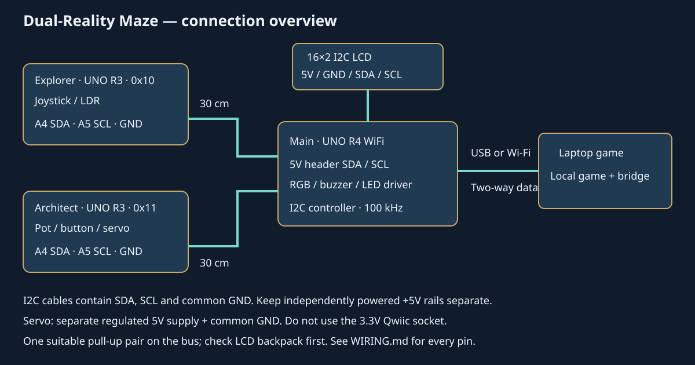
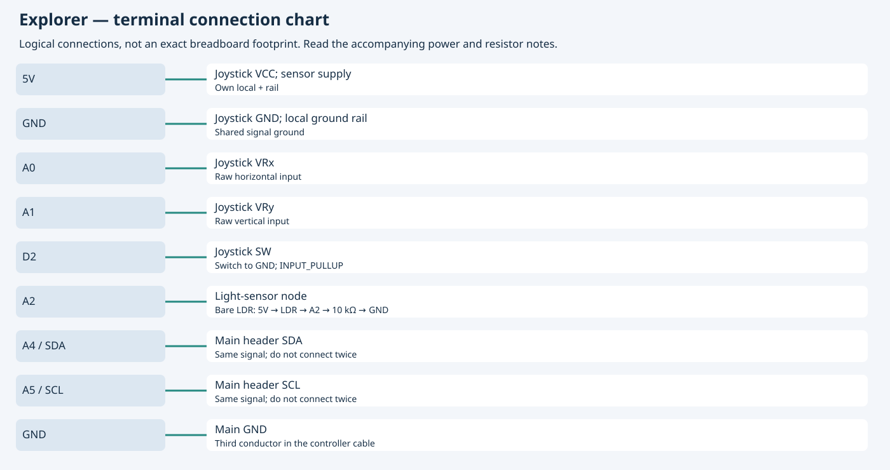
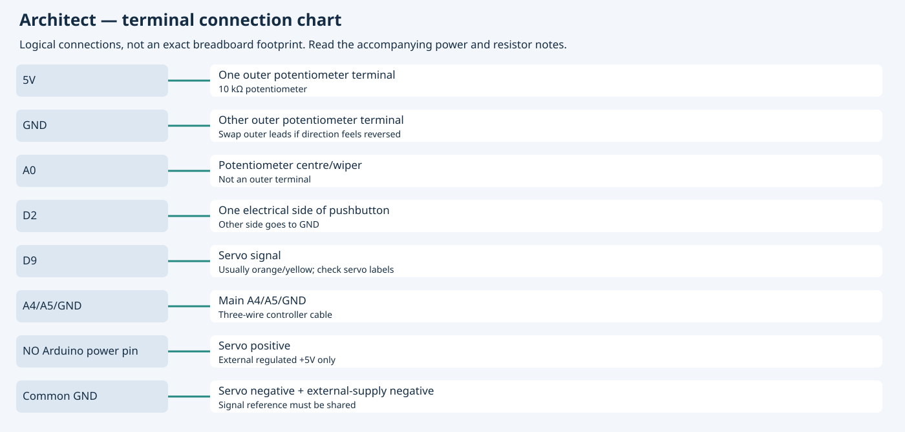
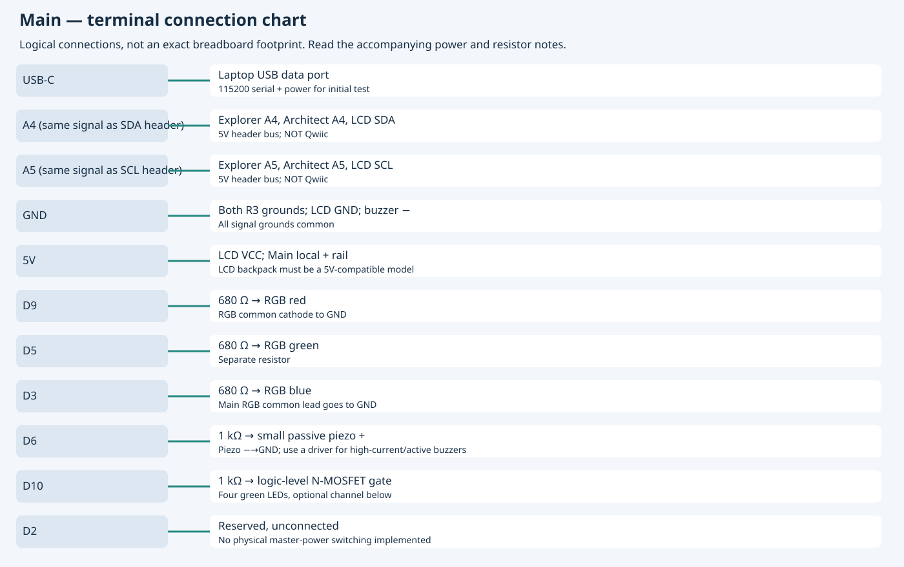

# Dual-Reality Maze: three-board hardware system 13 November 2026. Explorer UNO R3 + Architect UNO R3 + Main UNO R4 WiFi. The game remains authoritative for collisions, chapters, gate permissions and timing. See VERIFICATION.txt for bench results. ## Files and installation - Open Explorer/Explorer.ino, Architect/Architect.ino and Main/Main.ino separately in Arduino IDE. - Select Arduino UNO for each R3, Arduino UNO R4 WiFi for Main. Select each board's actual port before Upload. - Libraries: Servo (Arduino, tested 1.3.0), hd44780 (Bill Perry, tested 1.3.2). WiFiS3 and Wire come with the board packages. Tested packages: AVR 1.8.8, Renesas UNO 1.6.0. - Keep the Protocol.h tab beside each sketch. It is copied identically into all three folders. - Main also compiles for an UNO R3 as a USB-only fallback; its Wi-Fi code is excluded automatically. - Read WIRING.md and the CSV charts before powering anything. This replaces the earlier standalone ZIP test wiring where noted. ## First test: Main USB → laptop 1. Assemble with power disconnected. Initially leave the servo horn/mechanical load detached. 2. Power both R3 boards by USB. Power Main through a USB-C **data** cable to the laptop. Separate board 5 V rails stay separate; connect all signal grounds. 3. Upload the correct sketch to each board. Main Serial Monitor at 115200 baud prints one JSON sample every 50 ms. `eOK` and `aOK` should both become true. It also prints its Wi-Fi AP address at startup. 4. Close Serial Monitor before opening the game's USB connection; one program owns the port at a time. 5. Double-click the project-root `Start Maze.bat` or this folder's `Start Hardware Game.bat` (Node.js required). It starts the bridge and opens the hardware game in your default browser. USB serial requires Chrome or Edge. Repeated launches reuse the running bridge. 6. The **Main Arduino connection** panel opens at the bottom left. Choose **Connect Main USB** and select the R4. Do not also use the older Connect Explorer/Architect USB buttons. 7. Leave the joystick centered and click **Calibrate centred joystick**. Use Invert X/Y if needed. Fold the panel and choose Begin adventure or Skip the prologue · Play. 8. Check raw X/Y, light, pot and button counters. One click should increment the relevant counter once. A held button must not keep incrementing. 9. Reveal is enabled by default. With Dark reads lower checked, an A2 reading strictly below 1000 activates Reveal; 1000 or above releases it. Cover/uncover to create a new edge. Game charge/cooldown and scene rules still apply. The panel lets you tune the threshold. For a module whose readings rise in darkness, uncheck Dark reads lower. ## R4 built-in Wi-Fi → laptop 1. The same Main firmware starts the access point `DualRealityMaze`, password `MazeDemo362`. It needs no campus Wi-Fi credentials. This is a local demo network, not an Internet connection. 2. Disconnect any game USB session. Double-click Start Maze.bat, then choose **Connect Main Wi-Fi**. On Windows the bridge requests connection to the existing DualRealityMaze profile. If the profile is missing, join once in Windows Wi-Fi settings using the password above, then retry. Windows may report “No Internet”; stay connected. The game artwork is embedded. 3. The launcher automatically starts the bridge at http://127.0.0.1:8080 using Main address 192.168.4.1. No terminal command or npm install is needed. If an older or unrelated bridge occupies port 8080, close it before retrying; the launcher reports the conflict. 4. Watch live readings in the panel, then fold it to play. The bridge forwards input and game-state feedback to Main. Use only one game tab and one laptop to control the demo. 5. The USB-C cable can remain for power. The game uses either USB serial or Wi-Fi, not both at once. To remove the USB power cable later, supply the board appropriately; Wi-Fi is not wireless power. The local bridge binds only to 127.0.0.1. It serves the game, input/feedback routes, a health check, and Windows Wi-Fi connection/status routes. It avoids direct browser cross-origin requests to the R4. No npm install is needed. ## What each control does Explorer joystick moves/navigates. Its click confirms menus/comics, picks fruit where appropriate, or opens pause. Architect potentiometer selects one of five controls; its button confirms/toggles. Both retain the existing game scene locks and two-button pause gesture. Covering the LDR triggers reveal on an edge, subject to game restrictions. The physical servo represents the **currently selected** passage's accepted open/closed state, rather than every button press. It closes outside active gameplay or if laptop feedback is absent for 1.5 seconds. The Architect uses CLOSED_US=1200 and OPEN_US=1800 and releases pulses after 700 ms. Only Main carries an RGB LED. Red indicates startup, a missing board, failed LCD or access-point initialization, or loss of Wi-Fi game feedback for two seconds. Green means the hardware is connected and waiting for the game. Blue means the loaded game is exchanging feedback over Wi-Fi. Main LCD shows controller connectivity and game time. Four optional green LEDs breathe together from one transistor-controlled channel. The buzzer gives a startup tone. Elaborate game sound cues are not yet routed to this buzzer. Main D2 is reserved, not a working master power switch. Packets: Explorer 0x10, Architect 0x11, 12 bytes with version, sequence, three 10-bit ADC readings, 16-bit press count, button level and XOR checksum. Main polls at 100 kHz every 25 ms. Sequence changes establish freshness; 500 ms without change marks a controller offline. The laptop releases movement on lost input. Button counters prevent duplicate polling from repeating presses. Feedback uses `S,gate,mode,seconds` over USB, or the same command through the local Wi-Fi bridge. Mode: 0 idle, 1 gameplay, 2 paused. I2C feedback is a separate four-byte checked packet; callbacks do not move the servo or read analog pins. ## Seeing and tuning the real movement Once the boards are connected, the panel exposes live sensor readings and logs the game player's position. Download **maze-hardware-log.json** after moving, pressing each button, sweeping the potentiometer and covering the sensor. We can inspect that file and the running game to tune dead zone, direction, thresholds and response. Physical testing is still required; compilation is not proof that the wiring or actual mechanism works. The hardware game is a separate copy of the current Story Edition. The original game and original test sketches remain unchanged. `maze-source/work/story/hardware-hub.js` is the editable laptop adapter. `hardware/build-hardware-game.mjs` rebuilds this copy from the current root Story Edition. ## Bring-up order Test Main + LCD first; then add Explorer; then Architect without servo power; finally add the regulated servo supply and LEDs. If either controller is offline, check ground, SDA/SCL swaps, header selection and duplicate/missing pull-ups. A physically stuck I2C bus can still require powering down and correcting wiring. Never reconnect an unpowered peripheral to a powered signal bus. A compile-tested USB fallback is provided; see VERIFICATION.txt for the tested configuration. ## References ### Connection recovery update The game stops movement when input is stale or a request fails. Center the joystick during recovery. With Rejoin Main Wi-Fi checked, repeated failures request reconnection at most once every 15 seconds while this game tab is visible. Disconnect cancels future retries and ignores late input responses; an already-requested Windows join may still finish. The bridge checks whether the laptop is already on Main's network before requesting a join. It does not reset Main or change Windows drivers or power settings. Windows WLAN records for 11 November at 16:14:40 and 16:25:57 report DualRealityMaze being disconnected by the driver. Its saved profile uses manual connection and has AutoSwitch disabled. These records establish Wi-Fi link loss, but do not identify whether the adapter, interference, AP firmware, or power caused it. Manual connection also means Windows need not rejoin Main automatically. Recovery helps reconnection; it is not a proven cure for the underlying drop. Main's current firmware initializes its access point only at startup. If DualRealityMaze disappears, check Main power and restart it before retrying. Download diagnostic log captures connection events, readings, and player coordinates. The bridge startup log is at `%LOCALAPPDATA%\DualRealityMaze\bridge.log`. No firmware upload is required for the launcher and Reveal threshold update. ### Hardware references - UNO R4 WiFi 5 V GPIO and pinout: https://docs.arduino.cc/hardware/uno-r4-wifi/ - R4 Wi-Fi/AP examples: https://docs.arduino.cc/tutorials/uno-r4-wifi/wifi-examples/ - Arduino I2C/Wire and R3 32-byte limit: https://github.com/arduino/reference-en/blob/master/Language/Functions/Communication/Wire.adoc - hd44780 library/auto-detect backpack: https://github.com/duinoWitchery/hd44780 - Servo library: https://github.com/arduino-libraries/Servo Use WIRING.md as the connection reference for these sketches, rather than older project architecture documents.
# Circuit and wire placement All three large breadboards can be used; this is a breadboard wiring plan, not a custom PCB fabrication layout. Component pin order varies by module. Follow the printed terminal labels, not wire colour or a guessed photograph. ## Power and breadboard rails Start with USB-powered boards for debugging. Each board's own 5V goes to its own red + rail; GND goes to its own blue/− rail. Join the ground rails between boards. **Do not join their separately USB-powered +5V rails.** Some full-size breadboard power rails split halfway: verify continuity and bridge the two halves of the same rail if required. The two sides of the centre trench are isolated; each five-hole row on one side is connected internally. Neither colour printing nor physical proximity proves continuity. The Architect servo has a separate regulated 5V supply rated for at least 1A, with common GND. Its positive rail must not connect to the Arduino USB 5V rail. Add a 470–1000 µF electrolytic across the servo supply near its plug (observe polarity), and a 100 nF ceramic in parallel. A common PP3 9V battery is not a suitable direct servo supply. Never connect 9V to any 5V pin, sensor, LCD or servo. A battery option needs suitable regulation and a loaded runtime test; the earlier one-hour objective is not established. ## Explorer UNO R3 | Arduino pin | Connect to | Details | |---|---|---| | 5V | Joystick VCC; sensor supply | Own local + rail | | GND | Joystick GND; local ground rail | Shared signal ground | | A0 | Joystick VRx | Raw horizontal input | | A1 | Joystick VRy | Raw vertical input | | D2 | Joystick SW | Switch to GND; INPUT_PULLUP | | A2 | Light-sensor node | Bare LDR: 5V → LDR → A2 → 10 kΩ → GND | | A4 / SDA | Main header SDA | Same signal; do not connect twice | | A5 / SCL | Main header SCL | Same signal; do not connect twice | | GND | Main GND | Third conductor in the controller cable | For a light-sensor module instead of a bare LDR: VCC→5V, GND→GND, AO→A2; DO unused. Do not add the bare-LDR divider on top of the module's existing divider. Use the game's polarity setting if needed. Suggested bare-LDR placement on a standard numbered breadboard: put the sensor signal leg at e10 and its supply leg at e12; connect a10→A2 and a12→+5V. Put a 10 kΩ resistor from b10 to b15 and a15→GND. This uses three distinct row nodes. Place the sensor away from RGB light and fingers normally holding the board; an opaque barrier prevents internal light leakage. Joystick pins can connect through jumpers; do not force a module across rows that short its terminals. On the small breadboard in this build, use three separate five-hole strips on the same side of the center trench. Strip A holds Explorer 5V and one LDR leg. Strip B holds the other LDR leg, the A2 jumper, and one 10 kOhm resistor leg. Strip C holds the other resistor leg and Explorer GND. A bare LDR works in either orientation. Use a jumper wherever two intended contacts sit on opposite sides of the trench. ## Architect UNO R3 | Arduino pin | Connect to | Details | |---|---|---| | 5V | One outer potentiometer terminal | 10 kΩ potentiometer | | GND | Other outer potentiometer terminal | Swap outer leads if direction feels reversed | | A0 | Potentiometer centre/wiper | Not an outer terminal | | D2 | One electrical side of pushbutton | Other side goes to GND | | D9 | Servo signal | Usually orange/yellow; check servo labels | | A4/A5/GND | Main SDA/SCL/GND | Three-wire controller cable | | NO Arduino power pin | Servo positive | External regulated +5V only | | Common GND | Servo negative + external-supply negative | Signal reference must be shared | **Button wiring change:** the old ZIP used a pull-down and active-HIGH input. This firmware uses INPUT_PULLUP and active-LOW. Remove that old 10 kΩ pull-down and rewire the button between D2 and GND. For a four-leg tactile button, identify the two internally connected pairs with a continuity meter. Use one leg from each opposite electrical side; legs in the same pair remain shorted even when not pressed. Straddle the breadboard centre trench where the package fits, then verify unpressed=open and pressed=closed before connecting D2. No external resistor is needed. Put the servo power connections on a separately labelled rail, not the Arduino + rail. Keep its motor wires away from SDA/SCL and the potentiometer signal. The gate attaches to the supplied servo horn; test unloaded before installing any gate linkage. The handheld controllers do not require RGB wiring. ## Main UNO R4 WiFi | Main pin | Connect to | Details | |---|---|---| | USB-C | Laptop USB data port | 115200 serial + power for initial test | | Header SDA (A4 equivalent) | Explorer A4, Architect A4, LCD SDA | 5V header bus; NOT Qwiic | | Header SCL (A5 equivalent) | Explorer A5, Architect A5, LCD SCL | 5V header bus; NOT Qwiic | | GND | Both R3 grounds; LCD GND; buzzer − | All signal grounds common | | 5V | LCD VCC; Main local + rail | LCD backpack must be a 5V-compatible model | | D3 | 330 Ω → RGB red | RGB common cathode to GND | | D5 | 330 Ω → RGB green | Separate resistor | | D9 | 330 Ω → RGB blue | Main RGB common lead goes to GND | | D6 | Small passive piezo + | Piezo −→GND; use a driver for high-current/active buzzers | | D10 | 100 Ω → logic-level N-MOSFET gate | Four green LEDs, optional channel below | | D2 | Reserved, unconnected | No physical master-power switching implemented | For the four green LEDs: Main +5V → **one 330 Ω resistor per LED** → LED anode. Join the four cathodes at the MOSFET drain. Source→Main GND. Gate→D10 through 100 Ω; gate→GND through 100 kΩ. Use a logic-level MOSFET specified to turn on at a 5V gate and verify its G/D/S pinout. Do not drive the four LEDs directly from one GPIO. The four LEDs fade together; there are not four separate animation channels. For a common-anode RGB LED, common→local +5V and set RGB_COMMON_ANODE=true in that board's Protocol.h. Do not assume the longest pin or colour order without checking the specific LED. Modules with built-in resistors differ from bare LEDs. ## I2C interconnection and pull-ups Main is the bus controller. Explorer is address 0x10, Architect 0x11. The hd44780_I2Cexp library discovers the compatible LCD backpack address/wiring (commonly 0x27 or 0x3F). No HC-12, Bluetooth or ESP32 add-on is needed. Use each 30 cm cable for SDA, SCL and GND. Label both ends. Route SDA beside ground, keep the two branches short, and keep motor-power wiring separate. This length is reasonable to test at 100 kHz, but reliable operation must be checked on the assembled circuit. One pull-up network belongs on the bus near Main: SDA→4.7 kΩ→Main +5V and SCL→4.7 kΩ→Main +5V **if equivalent pull-ups are not already fitted on the LCD backpack**. Check the backpack before adding them; multiple pull-ups in parallel lower the effective resistance. Do not add a pair at every board. This is not a connection between the boards' positive power rails. Use Main's labelled 5V SDA/SCL headers; the R4 Qwiic socket is a separate 3.3V bus and is unsuitable for this wiring. Connect ground first while power is off, then SDA and SCL. Power all bus participants together for testing; avoid powering one board through another board's I2C pull-ups. If the LCD does not initialise, run the hd44780 library's I2CexpDiag example on Main with the controllers disconnected before restoring the complete circuit. The CSV files repeat these terminal connections for assembly check-off. Breadboard hole numbers beyond the simple bare-LDR example are deliberately not guessed: actual module footprints and tactile-switch leg orientation must be checked.